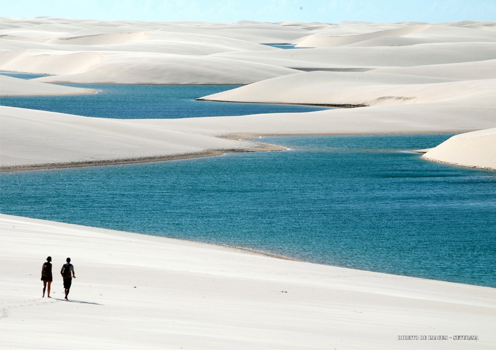
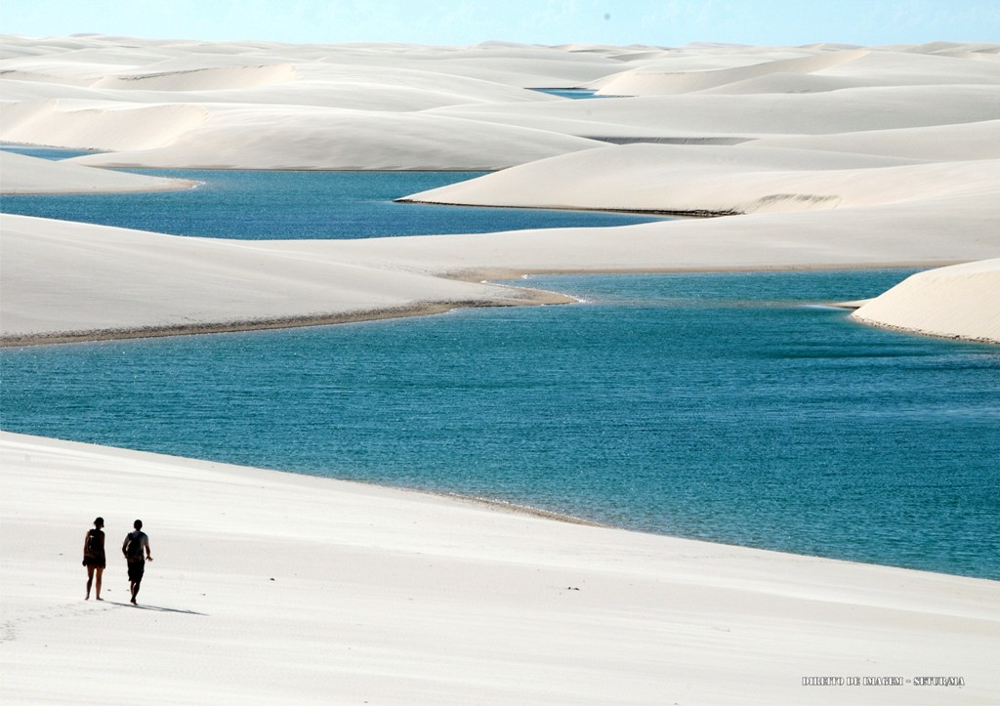

Maranhão - Vivendo a Cultura
Uma terra de histórias. Uma terra de diversidade. Uma terra de cultura.
No Maranhão, a cultura está fortemente ligada a vários aspectos de sua terra e seu povo. Mesmo com a modernização da cidade, muito do seu charme original é mantido. O mesmo vale para os costumes do povo. Não se esqueceram de suas origens, e continuam a realizar práticas, festas e tantas outras tradições
Toda essa valorização vêm da longa história do Estado. Todos os povos antigos que uma vez passaram por aqui deixaram sua marca, e o povo se encarregou de conservar tais marcas. Graças a isso, o Maranhão é hoje uma rica mistura de diferentes povos e culturas.
Aspectos da Cultura
 

Eventos culturais cheios de vida, comidas típicas deliciosas, locais turísticos sem igual... tudo isso e muito mais são parte do que faz do Maranhão o que ele é hoje.
A cultura se dá por muitos meios, e no Maranhão há cultura em abundância.
Mesmo apenas ao andar por suas cidades, é possível entrar em contato com muito da sua personalidade, o que traz uma curiosidade de se aprofundar sobre sua história.
Descobrindo o Maranhão
Há muito a dizer sobre a cultura do Estado. Mostraremos a você um pouco das muitas maravilhas encontradas aqui.
Venha conhecer mais!